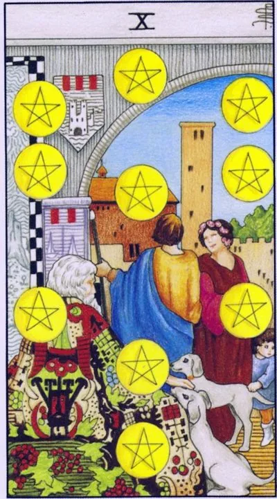

Minor Arcana · Pentacles
XTen of Pentacles
The heritage of the family: strong foundations, family well-being and wealth that will outlive its creators.
Archetype and core meaning
Under the stone arches sits a gray-haired elder in a robe embroidered with grape clusters; next to two white dogs, and in the depths a young couple hidden by a tapestry. Three generations under one roof: the old man transmits, the young take in, the dogs guard the way. A dozen pentacles are the top of the suit: wealth is measured not by sum, but by continuity - by birth, by home, by business that will continue without you.
This card looks beyond the immediate benefits and asks, what do you invest in besides yourself? Legacy is built out of boring bricks -- wills, traditions, apartments, trees planted. A dozen is a sign that the foundation already holds and can be built beyond its own century.
Daily life
Everyday life is colored by family: feasting, helping parents, talking about housing for children, family archives. Good day for legal affairs - inheritance, property, big purchases. And the sense of kindness grows from small: Saturday pancakes, a shared film, trips to the elders.
Work and career
It takes a long time to build things: a family business, a corporation, a business for successors; it can be a stable market or a partnership of two names; it works with capital: a name opens doors before a resume; the best test of strength is a system that survives your vacation.
Relationships
Relationships go to the clan level: getting to know your family, grandkid plans, marriage is the union of two tribes with their traditions and resources, long-time couples get a quiet depth: silence is two times more comfortable than someone else's holiday, a lonely hint: look for someone who wants to build for centuries, not for a season.
Health
Health is broadly considered: heredity, family habits, environment for children. Gather medical history of the family and cover genetic risks with examination. Family health rituals — general exercise, hiking — work more powerful than personal exploits: the body is trusted with the pack.
Spiritual meaning
Tradition has seen here a working channel of communication with ancestors: ancestral forces to invoke and to rely on, dozens of practices — commemoration, home altar, restoration of broken traditions, you are a link in the chain, and power flows through the one who remembers both ends.
A crack in the ancestral foundation: disputes over inheritance, the breakdown of ties and wealth that has not been continued.
Archetype and core meaning
The arches have cracked: the old people are on the sidelines, the young are not listening, the tapestry is torn between generations. The inverted ten is wealth that has lost its footing: an inheritance torn apart by the court; a family where money has replaced intimacy; an empire that has collapsed because no one thought of successors. Formally, everything can look good -- cracks are still under plaster.
The modern face of the card is a rootless man who builds a life on a Friday basis and suddenly finds that there is nothing to rely on. Interrupted transmission is not just money: untransmitted recipes and stories also make up a ruined inheritance. Restore connectivity while the arches stand and the crack can be closed with conversation.
Daily life
The house is strained by tribal overtones: the discussion of the will ends in shouting, generations do not talk, the debts of the elders are written on you, keep your distance in monetary conflicts and record the agreements in writing.
Work and career
The foundations are shaky: family businesses are cracking over heirs, companies are changing owners, promised shares are words, long projects are being curtailed for quarterly figures. Protection is legal purity: agreements, registered shares, reserve. Don't build prosperity on someone else's word, even your own.
Relationships
Relationships clash with gender: family versus partner, conditions, a wedding in a business negotiation format, or a couple who avoid the future: no children, no housing, only the present, a union without a foundation will not survive the first storm - an unpleasant conversation about the long-term cheaper than a disaster.
Health
Your body bills for birth programs -- your father's hypertension, your grandmother's diabetes, your stress -- it's not just your eye color that you inherit, you get a card of your family health, you get a basic checkup, and home care is more effective than medicine, and nutrition and atmosphere become your physical diagnoses.
Spiritual meaning
The broken bond looks like a de-energized wire: the ancestral powers do not reach, their unused pulls down — unforgiven, unburied, forgotten. The practice of restoration is commemoration, writing to ancestors, completing their affairs. Until the chain is joined, personal magic stands on the sand.
🌿 How the school reads this rank
The main idea
Practical wisdom and affluence that feels sufficient, not a huge amount, but an understanding of "I'm good enough."
How it manifests
In the family, there is continuity of generations and the transfer of experience; in work, practical wisdom and knowledge that can be passed on; in finance, wealth that corresponds to real needs.
The shadow side
The desire to have more than is necessary becomes greed; or the experience of the past becomes inapplicable to the new conditions.
Keywords
Inheritance, succession, succession, wisdom
📜 In detail — from the rank lecture
Essence of the card
earth is practical action, pragmatism, and ‘what can be held in the hands.’ The five senses are distinct from emotions, a distinction that is often blurred in Russian. Money is ‘the physical embodiment of time and energy spent,’ a resource or ‘fuel’; knowledge belongs to Swords, while applied knowledge becomes experience and skill, which belong to Pentacles.
Upright position
- Symbolism: a pattern of coins — Sephiroth Tree (Kabbalah): the transmission of experience to generations; the teacher's archetype — a gray beard, heavy shoes long journey. Lectures by Michael Laitman are mentioned as the source of wisdom.
- Family and “generational change”; inheritance is not just property: experience is “just as much an inheritance as the house you built.”
- Finance: not wealth, but wealth: “you need to feel happy with wealth” The amount does not matter (10 euros or 10,000) – it is important to match the amount with the need (for example, with a car in a car dealership).
- Work: practical wisdom, transfer of developments; analogy with the Hierophant, but there are age-old patterns, here - personally experienced experience.
- The difference from nine: there is a sense of security and lack of fear of the future; here - "I have enough as I need." "Too much, it is not healthy" - the image of the right pensioner on the Mediterranean diet.
- Combination (inverted 9 + 10 straight to the question about the job): offer either a lower salary or conditions that are not completely satisfied.
Negative meaning
• wanting more than you need — greed ("give me pills for greed ... more"); cakes instead of bread; buffet "all inclusive"; life limits — reduce desires. Also: the experience of ancestors is, but it does not help / it is not enough for modern problems.
School emphases and distinctive points
- His symbolic support: Kabbalah (Sephiroth, Laitman); the Bible is the end of the flood at Ararat, the rainbow as a sign of joy (with the reservation: the rainbow is NOT a symbol of LGBT); St. Sebastian; Irida in the roll call with Moderation; pastoral and idyll; Victorian England and the theme of inheritance.
- Modern images: bread for 10 euros against the cake "Napoleon", buffet "all inclusive", car dealership, closet from IKEA, Courchevel.
- Practice: add to the conclusions “but it is inaccurate”; begin to work with straight and inverted cards; tarologist can not include evaluative emotions (anecdote about Uncle Fedor in a Buddhist monastery – rejection of evaluative); distinguish who the card is about “you or your enemies” (the plot “you will destroy the great state”).
- Examples from practice: 9 + 10 pentacles about salary; a gunshot on a dozen swords and a “knife wound to the heart” on an inverted three; dismissal with a straight dozen cups.
Keywords
Prosperity; inheritance and experience of the family; “I am lacking”; continuity of generations; practical wisdom.